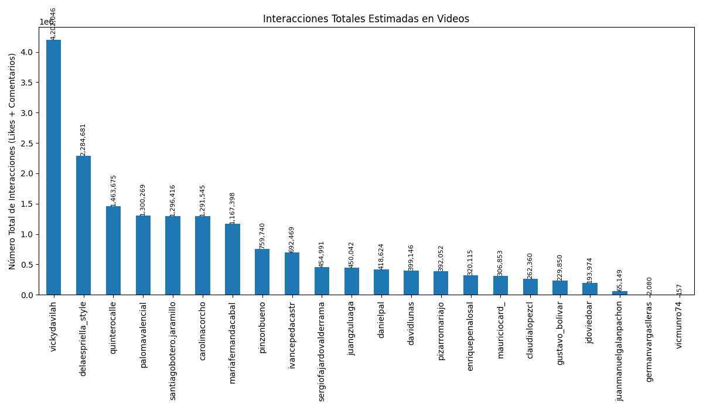

Análisis General de Candidatos en Instagram
Análisis basado en datos de Instagram en Octubre de 2025
Gráficos Comparativos de Rendimiento General



Resumen de Engagement por Tipo de Contenido
| Candidato |
Seguidores |
Avg. Engagement Video (Likes) |
Avg. Engagement Video (Comentarios) |
Avg. Engagement Imagen (Likes) |
Avg. Engagement Imagen (Comentarios) |
Avg. Engagement Carrusel (Likes) |
Avg. Engagement Carrusel (Comentarios) |
| Andrés Guerra |
80,394 |
724.52% |
48.22% |
193.86% |
10.19% |
0.00% |
0.00% |
| Anibal Gaviria |
70,883 |
456.79% |
19.05% |
0.00% |
0.00% |
0.00% |
0.00% |
| Claudia Lopez |
997,629 |
225.63% |
31.83% |
16.16% |
0.66% |
4.87% |
0.25% |
| Daniel Palacios |
59,822 |
243.30% |
10.88% |
2.17% |
0.27% |
0.10% |
0.00% |
| David Luna |
256,827 |
188.07% |
6.32% |
0.00% |
0.00% |
9.77% |
0.42% |
| Abelardo de la Espriella |
765,953 |
861.75% |
53.36% |
910.91% |
54.08% |
0.00% |
0.00% |
| Efraín Cepeda |
29,473 |
110.74% |
5.22% |
203.92% |
1.70% |
400.37% |
2.38% |
| Enrique Peñalosa |
109,002 |
815.47% |
43.89% |
0.00% |
0.00% |
123.16% |
5.65% |
| Germán Vargas Lleras |
139,847 |
0.00% |
0.00% |
37.87% |
0.93% |
0.00% |
0.00% |
| Hector Olimpo |
46,779 |
402.49% |
62.14% |
0.00% |
0.00% |
107.63% |
6.31% |
| Ivan Cepeda |
210,526 |
879.84% |
37.30% |
73.76% |
1.69% |
103.31% |
2.01% |
| Juan Daniel Oviedo |
251,205 |
266.29% |
10.84% |
4.45% |
0.13% |
2.52% |
0.11% |
| Juan Guillermo Zuluaga |
106,815 |
370.97% |
20.68% |
0.00% |
0.00% |
0.00% |
0.00% |
| Juan Manuel Galan |
42,785 |
422.34% |
25.07% |
0.00% |
0.00% |
15.06% |
0.43% |
| Luis Gilberto Murillo |
39,959 |
528.49% |
97.08% |
50.30% |
12.51% |
98.85% |
13.82% |
| Maria Fernanda Cabal |
380,353 |
570.63% |
31.12% |
81.59% |
2.73% |
108.72% |
4.85% |
| Mauricio Cardenas |
98,068 |
464.19% |
29.23% |
0.00% |
0.00% |
23.03% |
1.05% |
| Mauricio Gómez |
395,728 |
376.00% |
84.09% |
10.03% |
2.05% |
8.54% |
1.82% |
| Mauricio Lizcano |
68,159 |
47.42% |
7.13% |
206.14% |
12.62% |
11.94% |
0.70% |
| Miguel Uribe Londoño |
113,478 |
630.68% |
35.98% |
1488.04% |
33.70% |
195.26% |
8.77% |
| Paloma Valencia |
261,441 |
881.23% |
38.32% |
1.45% |
0.18% |
16.61% |
0.19% |
| Paola Holgín |
144,865 |
705.33% |
34.40% |
33.28% |
1.12% |
37.03% |
0.74% |
| Juan Carlos Pinzón |
61,533 |
579.63% |
47.00% |
0.00% |
0.00% |
131.87% |
9.83% |
| Felipe Córdoba |
33,317 |
183.61% |
8.46% |
557.46% |
11.92% |
373.82% |
14.19% |
| Roy Barreras |
97,404 |
554.63% |
20.95% |
48.00% |
15.86% |
45.65% |
1.88% |
| Santiago Botero |
212,890 |
381.89% |
25.37% |
0.00% |
0.00% |
0.00% |
0.00% |
| Sergio Fajardo |
276,277 |
637.69% |
35.88% |
22.06% |
0.63% |
39.28% |
2.06% |
| Vicky Dávila |
1,498,846 |
315.96% |
27.04% |
1.30% |
0.81% |
6.27% |
0.63% |
Análisis Individual Detallado